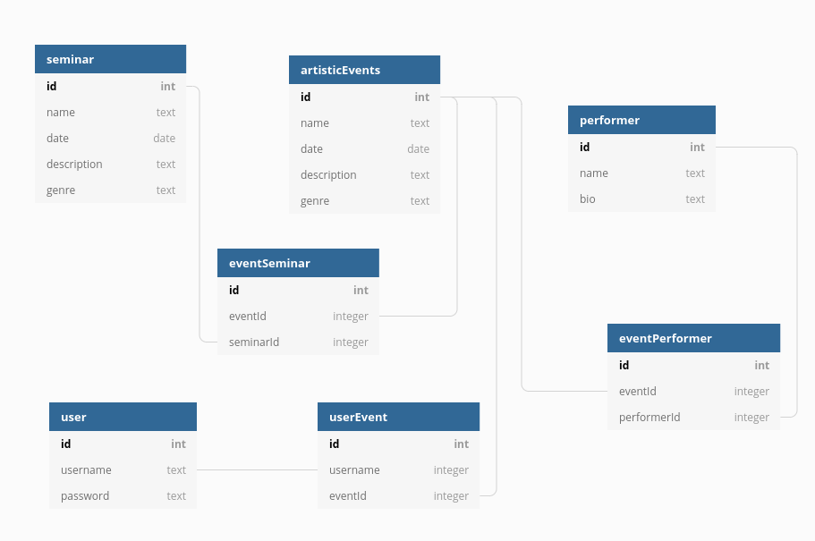

DOCUMENTATION OF THE BACKEND PART
Deliverable D1
GENERALE GROUP INFORMATION
| MEMBER | ROLE | FIRST NAME | LAST NAME | MATRICOLA | EMAIL ADDRESS |
| 1 | Administrator | Marco | Melis | 829686 | marco.melis@mail.polimi.it |
| 2 | Member | Bruno | Sciarrone | 891589 | bruno.sciarrone@mail.polimi.it |
| 3 | Member | Mattia | Massarini | 825664 | mattia1.massarini@mail.polimi.it |
LINKS TO OTHER DELIVERABLES
- Deliverable D0: the web application is accessible at https://mbmfestival.herokuapp.com.
- Deliverable D2: the YAML or JSON file containing the specification of the app API can be found at https://mbmfestival.herokuapp.com/backend/spec.yaml.
- Deliverable D3: the SwaggerUI page of the same API is available at https://mbmfestival.herokuapp.com/backend/swaggerui.
- Deliverable D4: the source code of D0 is available as a zip file at https://mbmfestival.herokuapp.com/backend/app.zip.
- Deliverable D5: the address of the online source control repository is available https://github.com/merklind/massarini-melis-sciarrone-hypermedia.
We hereby declare that this is a private repository and, upon request, we will give access to the instructors.
SPECIFICATION
Web Architecture
Presentation layer is composed by dynamic and static pages. The former is able, through AJAX calls and the REST API, to access database in order to retrieve data.
Knex module has been used to connect the database.
API
REST compliance
REST API has been written taking into account that every resource must have an unique identifier and must be located under an intuitive path.
For example, the artistic events' list can be found under the path: /artisticEvents, to get a specific event: /artisticEvents/4 and if the id doesn't exist in the database the response will contain an HTTP code error describing what's wrong (400 for bad request, 404 for not found and 401 unauthorized). We used GET and POST http method to get/send data to the database.
OpenAPI Resource models
Performer: contains the identifier, name and a biography
Artistic Event: contains the identifier, name, date, description
Seminar: contains the identifier, name, date, description
User: contains username and password
Data model

The main entities are 'performer', 'artisticEvent', 'seminar' and 'user' and additional support tables used to make queries. Database main entities' attributes mirrors the API data models.
IMPLEMENTATION
Tools used
We used Swagger.io tools to write the REST API and to generate the NodeJS server, JavaScript to write the code, npm to manage various packages like Knex that has been used to connect to the postgresSQL database.
We also used pgadmin4 in order to populate the database and to visualize tables and rows more easily.
Discussion
- How did you make sure your web application adheres to the provided OpenAPI specification? Which method did you use to test all APIs endpoints against the expected response?
We made sure to adheres to the provided OpenAPI specification by writing the API and by generating the server using Swagger.io tools.
In order to test the endpoints we used the Swagger UI page to send request and verifing the responses.
- Why do you think your web application adheres to common practices to partition a REST-based web application (static assets vs. application data)
All the static assets (static html pages and images) are located inside the public folder while all the dynamic pages are served through HTTP request and filled using AJAX calls.
- Describe synthetically why and how did you manage session state, what are the state change triggering actions (e.g., POST to login etc..).
Session state is managed by using a client-side cookie, generated after a sign up or a login, and erased after a logout.
We used a POST request to '/user/register' that creates a cookie client side if the provided informations are valid (the user doesn't exist already).
We used a POST request to '/user/login' that creates a cookie client side if the provided informations are in the database.
We used a GET request to '/user/logout' that simply erase the cookie and redirect to the main page.
- Which technology did you use (relational or a no-SQL database) for managing the data model?
We used PostgreSQL relational database.
OTHER INFORMATION
Task assignment
Marco worked on front end (90%) and API specification (10%)
Mattia worked on backend (60%), database (20%) and API specification (20%)
Bruno worked on application design (60%) and frontend (40%)
Analysis of existing API
We had a glimpse of what an OpenAPI specification looks like from the Pet Store API provided by Swagger.io , then since our application is about a music festival and not a store we took partial inspiration from API https://developer.ticketmaster.com/products-and-docs/apis/discovery-api/v2/ for the part of the API that manages the artistic events because both applications serve similar purpose, for example showing a list of events or a specific event.
In particular we took inspiration on how to organize endpoints to get resources by specifing an unique ID.
After that we extended the same concept throughout performers and seminars endpoints as well.
Learning outcome
Marco Melis learnt HTML, CSS, Javascript and REST API.
Mattia Massarini learnt NodeJs, Javascript, database organization/ queries and REST API
Bruno Sciarrone learnt HTML, CSS and Javascript